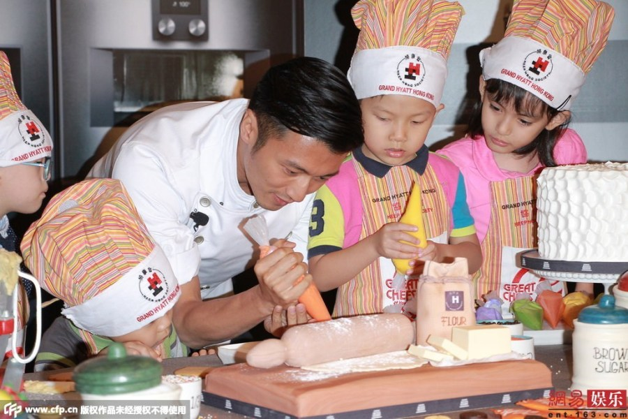
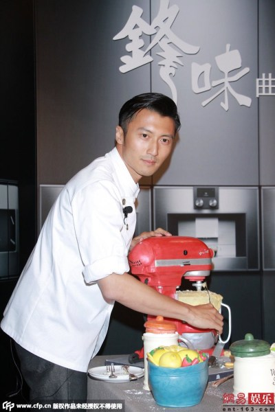

谢霆锋在香港出席活动。日前有报导指谢霆锋为事业，把与王菲的婚期延后三年，谢霆锋当日否认此事。另一方面，蔡卓妍与陈伟霆的“分讯”传得沸沸扬扬，但霍汶希就力撑两人感情稳定。
活动当日，主办方安排数位小朋友与谢霆锋一起制作曲奇，令谢霆锋突然慈父上身，连经理人霍汶希都表示：“霆锋你今天的眼神好温柔，好久没见你笑那么开心，你好慈父喔”，事后谢霆锋没好气表示霍汶希只是为了搞气氛。霍汶希坦言：“谢霆锋16岁起我们就认识，但大部分时间处于工作状态，工作的时候他都很认真，所以很少看到他笑”。但当记者问到谢霆锋与王菲的婚事，霍汶希就拒绝回应。

谢霆锋在接受访问时透露闲时会与两个儿子下厨，享受亲子时间。谢霆锋凭去年在娱乐圈的佳绩荣登福布斯名人榜第三位，对此，他酷酷地表示：“ 那么虚的荣耀我不追”。谢霆锋的美食节目《十二道锋味》于内地大受欢迎，最近正在开拍第二辑，谢霆锋透露今次的嘉宾都是相当有地位，有传王菲会担任嘉宾，谢霆锋就断言：“不会”。另外，日前有报导指谢霆锋为了事业，要推迟与王菲的婚礼长达三年，谢霆锋就否认传闻：“乱七八糟的传闻肯完会有”，当记者再追问两人的婚期及王菲的事时，谢霆锋都一概不回应。